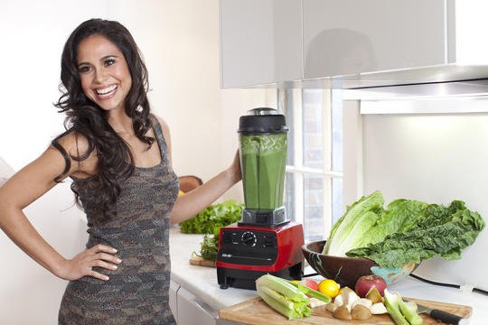

The Ultimate Guide to Losing Weight with Smoothies
Smoothies are a great tool for weight loss because you control the ingredients. They make perfect vehicles for relatively low-calorie, yet nutrient-laden ingredients that are capable of keeping you full for a long time.
By combining the right ingredients, you can create smoothies that taste great and help you drop pounds. It doesn't take long to learn what to use and how to make the right combinations. Just keep reading and start losing!
Smoothies for Healthy Weight Loss
The reason that smoothies can help you lose weight is that you can get all of your necessary nutrients in one glass without adding in excess or empty calories. When you learn about the ingredients that create a balanced smoothie, you will be able to include a good balance of protein, complex carbohydrates, healthy fats, as well as vitamins and nutrients.
Besides the basics, you can include powerhouse ingredients that up the nutritional value of your smoothie without adding extra calories. You can also include elements that enhance your weight loss by boosting your metabolic rate, giving you more energy, and filling you up for hours.
Ingredients for Weight Loss
While many of the traditional ingredients in healthful smoothies support a healthy weight, some are better than others. There are certain things you can put in your smoothie that will boost your weight loss by different means.
Avocado: Alligator pears are the preferred weight loss smoothie thickener, or ingredient that provides that signature smoothie creaminess. They supply ample healthy fat, which will keep you satiated and satisfied until your next meal, and an array of health promoting vitamins and minerals.
Berries: Any kind of berry, strawberry, blueberry, blackberry, and raspberry for instance, add a ton of flavor to a smoothie without adding very many calories or sugar. Additionally, they are high in fiber, which helps to keep you full, and antioxidants for your overall health.
Cayenne pepper: This spice not only adds a kick to your smoothie, it also boosts your weight loss capability. The compound responsible is called capsaicin. Research has shown that adding it to breakfast reduces consumption of fat and carbohydrates later in the day. In other words, consuming a little cayenne pepper will curb your appetite.
Chia seeds: The same little seeds that make hair grow on ceramic animals are a great tool for weight loss. They are packed with fiber and protein to help keep you feeling full and satisfied and they contain numerous healthful nutrients like calcium, antioxidants, and omega-3 fatty acids. They are also known to absorb toxins from your digestive tract. Many of my recipes call for chia seeds or chia seed gel. I prefer the gel because it helps unlock the nutrition, is slightly easier to digest, and adds to the creaminess of your smoothie. To make chia seed gel, combine equal parts chia seeds and water in a small container and let sit for 5-10 minutes to gel. Stores in the fridge for a good month.
Cinnamon: The popular spice helps regulate blood sugar levels by improving the metabolism of glucose. This results in a reduction of the amount of excess blood glucose that can be stored as fat. Abdominal fat, studies have shown, is more sensitive to the effects of cinnamon than fat from any other part of the body.
Coconut oil: This is my number one smoothie weight loss ingredient. As you'll soon read all about below, ample healthy fat in your smoothies and diet is imperative if you're serious about losing weight, and achieving optimal health. The predominant fats (medium chain) in coconut oil are used by the body for energy as opposed to being stored as fat. This superfood keeps you satiated, energized, and feeling good. Go with an organic virgin coconut oil for your smoothies and internal consumption. For more information on this wonderful food, click here.
I get my coconut oil from Mountain Rose Herbs (Coconut Oil Unrefined also Virgin) and Tropical Traditions (Gold Label Virgin Coconut Oil). If you order from Tropical Traditions by clicking on that link and have never ordered from Tropical Traditions in the past, you will receive a free book on Virgin Coconut Oil, and I will receive a discount coupon for referring you. I believe in full disclosure.
Greek yogurt: Compared to other styles of yogurt, Greek yogurt is much higher in protein. This means it can fill you up and keep you fuller longer. Opt for the full-fat variety, and stick with plain. The flavored varieties usually have a lot of added sugar.
Healthy fats: Healthy fats are vital to your overall health and help keep you satiated for hours. Totally denying fat is not a way to lose weight. You will only feel unsatisfied when you eat. Consuming ample healthy fat is actually an integral part of any weight loss plan. Include fats in your smoothies by adding avocado, coconut oil, or nuts and nut butters. If you make elixirs, butter and cream are good options too.
Leafy greens: Greens, like kale, spinach, dandelion, and romaine lettuce, are packed with phytonutrients and low in calories. They are also high in fiber. Make sure to rotate your greens on a regular basis.
Pulp from fruit: If you have a juicer, you know that in addition to the juice, you end up with a pile of throw-away pulp. This is all of the fiber from the fruits and instead of throwing it out or composting it, you can add it to your smoothies for a natural source of fiber.
Stevia: If the fruit you add to your smoothies is not enough sweetness for you, consider using stevia. This natural, zero-calorie sweetener comes from a plant and is free from the side effects and possible risks of artificial sweeteners.
Tea/water/ice: Many smoothie recipes call for milk or fruit juice to create the right consistency. To avoid the extra calories, substitute them with tea, water, or ice. A fruity, herbal tea is a good substitute for juice. Green tea contains healthful nutrients, including a compound thought to aid in weight loss, and it has a mild flavor. For a consistency more like a shake, use ice.
Ingredients to Avoid
There are plenty of great foods and supplements to put in your smoothies that will give you flavor without excess calories. There are also some pitfalls. Too many people assume that any smoothie is a healthy option, but there are some ingredients that should be avoided if you are using smoothies as a weight loss tool. The most important thing you want to avoid in your smoothies is excess sugar. Even "healthier"sugar from natural sources such as fruit, honey, and maple syrup should be minimized.
Canned fruits or vegetables: Fresh produce is always best, but when you can't find what you want, turn to frozen foods before cans. Canned fruits and vegetables often have added preservatives or sweeteners that increase the amount of calories. They have also lost a significant amount of their nutritional value. Fresh and frozen veggies and fruits maintain nutrient content much longer than canned products.
Dairy: Dairy products like milk, ice cream, or frozen yogurt are common ingredients in smoothies, but they are chock full of extra calories. There are exceptions, such as raw milk and plain, full-fat Greek yogurt, which is high in protein and low in sugar, but most dairy should be avoided.
Fruit juice: Juice is often high in sugar and calories and low in nutritional value, especially store-bought products. Many contain added sweeteners, and all have lost the fiber of the whole fruit. A limited amount of 100 percent juice is fine, but too much will just increase your total (bad) calorie intake.
Some Protein powders: By "some" I mean those full of fillers and suspect ingredients (list of ingredients is a long list of hard to pronounce words), which don't support healthy weight loss. A clean protein powder is perfectly acceptable. Don't feel like you have to use a protein powder though as there are many healthy whole food sources of protein such as nuts, nut butters, seeds, Greek yogurt, and gelatin. If you're not sure if a protein powder is right for you, give one a try and see how you respond. If you're wondering, I recommend Sun Warrior protein and these other clean protein powders.
Sweeteners: If your smoothie tastes very sweet, you are probably over doing it on the sweetener and potentially consuming too much sugar for a weight loss plan. Stevia is a natural, no-calories sweetener that you can use. Other good sweeteners, such as honey and maple syrup should be used in moderation. For the full download on sweeteners, see my article on the best and worst sweeteners.
Too much sweet fruit: Whole, fresh fruits are good for you, and a natural way to add flavor and a little sweetness to your smoothie, but too much can be a problem. A lot of fruit in one smoothie can spike your blood sugar and cause digestive problems. A good rule of thumb is to stick to avocados and berries. Small amounts of sweeter fruits such as banana, apple, mango, and pineapple is fine, but keep those to a minimum. Smoothies high in sugar are a recipe for weight gain.
For more information on the ingredients you want to avoid like the plague, check out my article on what makes a smoothies unhealthy.
An Overall Weight Loss Plan
As you work towards your weight loss goal with tasty smoothies as your tool, keep in mind that the healthy way to lose weight includes more than just dietary changes. Your smoothies, if created thoughtfully, will provide you with many of the nutrients you need including protein, carbohydrates, good fats, and vitamins and minerals. But, don't forget to eat healthful foods in addition to those smoothies. Get plenty of vegetables, healthy fats, high quality proteins, whole grains, and moderate amounts of fruit at your regular meals.
Healthy fats were mentioned above as an important weight loss smoothie ingredient and a vital part of a healthy diet. I can't overemphasize this point. Getting adequate amount of healthy fat and completely eliminating unhealthy fat from your diet of paramount. Of all the dietary and lifestyle changes I've made over the years, getting my fats straight has had the biggest impact on my health and well-being. If you haven't already, please be sure to read my article on fat:
The Skinny on Fat: Good Fats vs. Bad Fats
In addition to a balanced diet, you will also need to get plenty of exercise. Try to get some amount of physical activity every day, even if it is just a short walk. High intensity, short duration workouts two to three times a week have been proven to be the most effective form of exercise and great for shedding excess poundage. This form of exercise is also known as High Intensity Interval Training (HITT) and Peak Performance. Dr. Mercola explains it as well as anyone:
10 Minutes of Exercise Yields Hour-Long Effects
Other factors that contribute to weight loss are adequate sleep (underrated), stress reduction, hydration (your liver doesn't metabolize body fat well when burdened by dehydration), and a positive outlook. There's often an emotional component preventing people from losing weight, which is rarely easy to address. Resolving issues in your relationships, career, or past, often leads to profound breakthroughs.
Mindful eating is another strategy that besides being a good practice to help us slow down also often results in weight loss. When you bring mindfulness to your meals you usually make better choices (reach for and consume less junk food), eat less (your gut has ample time to signal to your brain when you're full), and appreciate the food more. To practice mindful eating, remove any distractions such as TV or reading, take small bites and chew slow (tough one for me) and notice the color, smells, and textures of your food. Please don't dismiss this simple practice - it can yield profound results.
Everyone's body is different and not all of us are meant to be as skinny as a supermodel or have 6-pack abs. Learn to love your body and don't get caught up in the game of comparing yourself to others. Staying active while also eating right, getting ample sleep, reducing stress, and enjoying healthful and nutritious smoothies are steps you can take that will get you to your goal weight before you know it.
Smoothie Diet
Smoothie diets have become quite popular. I want to make it clear that I'm not an advocate of smoothie diets. I recommend a smoothie for breakfast and two regular meals for lunch and dinner. Substituting a smoothie for another meal once in a while or having one after working out is perfectly acceptable. Note, most people enjoy smoothies for breakfast. Having your one smoothie for the day at lunch or dinner is absolutely fine.
I'm not a fan of smoothie diets, or detox diets, because they're often undertaken as a quick fix. These diets usually involve severely restricting calories, which is not easy and can actually cause you harm. You may lose weight on a smoothie or detox diet, but it's usually temporary. In the long run you end of gaining the weight you lost back and then some. This yo-yo dieting is not something you want to get caught up in.
I recommend a "real" diet. One based on traditional foods, those that our great grandparents consumed, and in many cases our species has consumed for hundreds and even thousands of years. This diet is based on the work of Weston A. Price and what I personally consume and advocate. For more information, see WAPF Dietary Guidelines.
After experimenting with vegetarianism and veganism I found these dietary guidelines work best for me and have been following them since late 2010. We are unique individuals with unique dietary requirements. There's not one perfect diet that everyone should be on. I recommend experimenting and paying close attention to your body and how you feel to arrive at what diet most resonates with you.
Credits to: healthysmoothiehq

 Proin iaculis purus consequat sem cure digni ssim donec porttitora entum suscipit rhoncus. Accusantium quam, ultricies eget id, aliquam eget nibh et. Maecen aliquam, risus at semper.
Proin iaculis purus consequat sem cure digni ssim donec porttitora entum suscipit rhoncus. Accusantium quam, ultricies eget id, aliquam eget nibh et. Maecen aliquam, risus at semper.